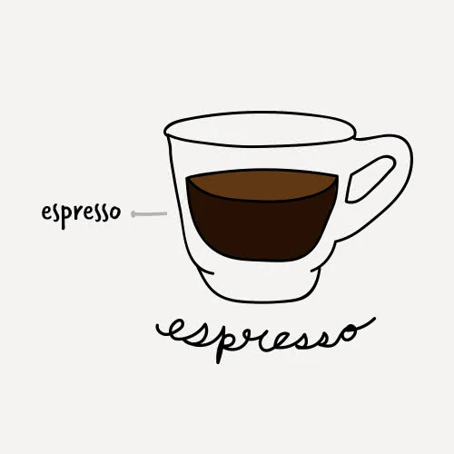

TYPES OF COFFEE
ESPRESSO
The espresso, also known as a short black, is approximately 1 oz. of highly concentrated coffee. Although simple in appearance, it can be difficult to master.
MACHIATO

The word macchiato means mark or stain. This is in reference to the mark that steamed milk leaves on the surface of the espresso as it is dashed into the drink. Flavoring syrups are often added to the drink according to customer preference.
CAPPUCINO

This creamy coffee drink is usually consumed at breakfast time in Italy and is loved in the United States as well. It is usually associated with indulgence and comfort because of its thick foam layer and additional flavorings that can be added to it.
CAFE LATTE

Cafe lattes are considered an introductory coffee drink since the acidity and bitterness of coffee are cut by the amount of milk in the beverage. Flavoring syrups are often added to the latte for those who enjoy sweeter drinks.